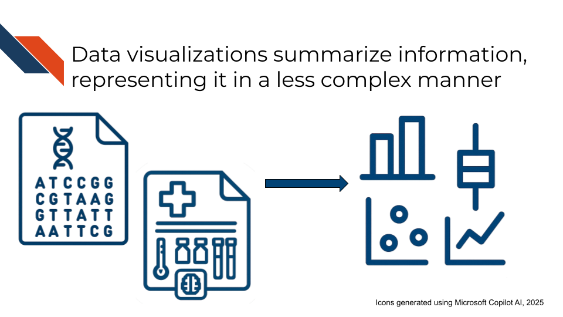
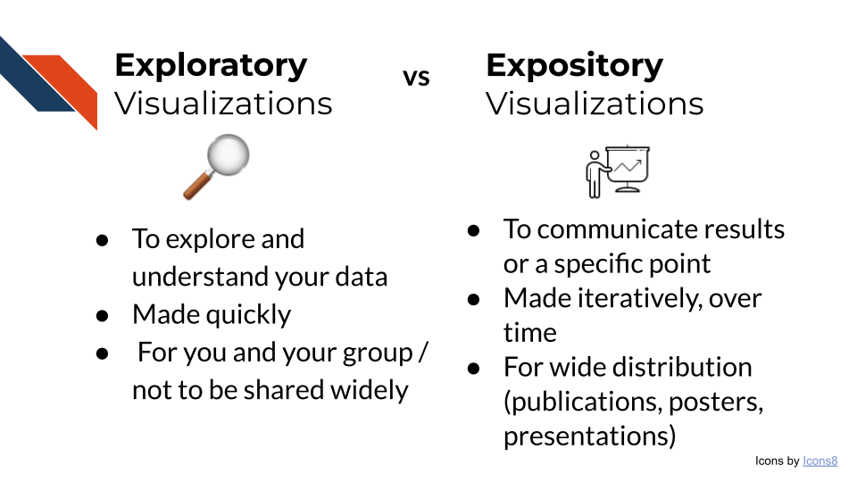
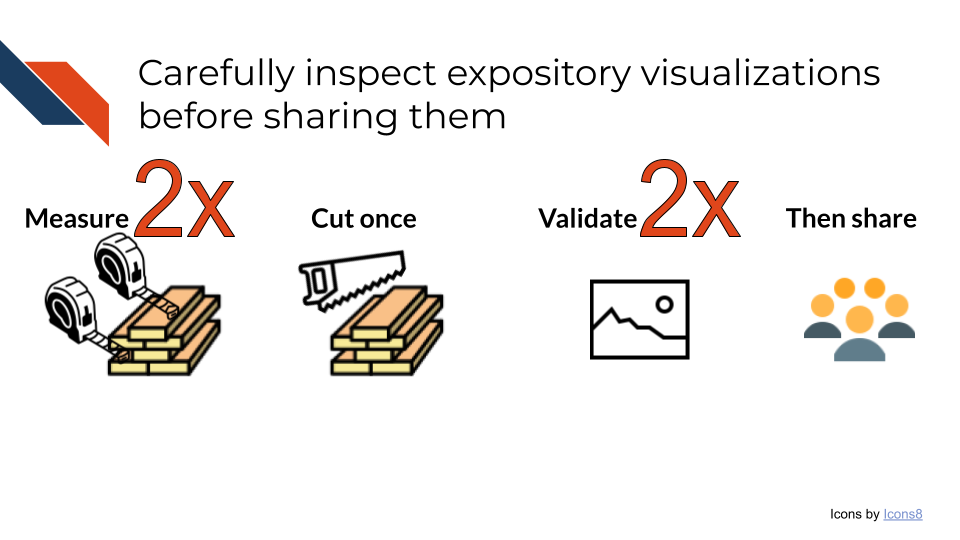
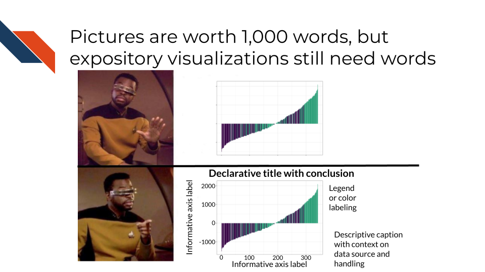

Chapter 2 Defining Data Visualization

2.2 What is Data Visualization?
Data visualization is the process (verb) or end product (noun) of making graphical representations such as plots or other figures to show different representations of information, to both explore or communicate aspects such as trends, patterns, relationships, or steps in a process.
A data visualization may show every data point within a dataset (raw data), or it may show transformations, subsets, statistical summaries, confidence intervals, or estimates of relationships between variables within the dataset. It may represent data using graphics such as points, lines, bars, area/size, color, shape, or some combination of these. Visualizations can also be used to provide an overview of a process, rather than displaying specific data. By whatever means the information is displayed, a complete or polished data visualization will also include design elements beyond graphics: informative text such as titles, axis labels, annotations or direct labeling, and captions. These are the building blocks of graphical representation of data. They may be combined in specific ways to form standard plot formats such as scatter plots, pie charts, bar plots, histograms, and more (with even more specialized formats used in certain industries and research fields - e.g., Sankey Diagrams, Forest Plots, Kaplan-Meier Curves, etc.).

Tables are another fundamental form of data visualization even though they don’t have the same visual appeal of a plot or figure. Tables summarize data in a structured manner, displaying specific information and enabling detailed comparisons. They may include graphics such as icons or color, but primarily utilize text within a grid-like format. A table may be stand alone or accompany a plot to provide a more complete picture.
There are two main types of data visualizations: Exploratory and Expository visualizations. This course will focus on best practices in preparing expository visualizations.

2.2.1 Exploratory Visualizations
Exploratory visualizations are made during Exploratory Data Analysis (EDA). These visualizations are made quickly and will not be shared widely outside of your team. EDA and exploratory visualizations are useful for:
- Exploring a dataset
- Data wrangling: Determining how to reorganize or clean a dataset (checking for missing data, data miscodings etc.)
- Checking that your reorganizing or cleaning of a dataset worked correctly
- Sketching any necessary quality control or transformation steps
- Validating that you have the necessary data to answer your question
Exploring a dataset
Exploring a dataset involves looking at the data. Sometimes this is just visually inspecting the data and other times its creating plots to look at aspects of a variable or how variables relate to each other. You’ll primarily be looking to see what data is there, if anything is missing, how the data is encoded/how it appears, if you have all the variables/features you need, and how variables relate to each other. Visualizations that will be useful for exploring a dataset include any plot showing distributions (violin, boxplot, stem and leaf, etc.), tables, heatmaps, line plots, and scatter plots.
Steps to consider for exploring a dataset
- Look at the beginning of the dataset:
- For tabular data, are the header names present/correct?
- Is the data separated correctly?
- Does the data appear how or contain what you would expect? (e.g., DNA sequences, numbers, pixels, etc.)
- Look at the end of the dataset:
- Is there unintended information included at the end?
- Does the file end where you would expect or is data potentially missing/wasn’t transferred?
- What’s the size of the dataset?
- For tabular data, is the number of rows and columns what you would expect?
- Is the file size correct or was data lost in any transfer steps?
- Look for missing data
- How is missing data encoded (e.g., how it appears or what it looks like)? “NA”, “NULL”, “999”, “-1”, blank, etc.?
- What variables have missing data?
- Is the data missing at random or is there some pattern?
- Are some variables missing data together? Or inversely (e.g., one variable has data when the other doesn’t)?
- Will you drop missing data or impute it? How does your action change the dataset?
- Look at the variables you have
- Are there any variables that should be there that aren’t such as possible confounders or covariates? If so, can you use data that is there to define that information?
- Do you know units or other important information (e.g what does 0/1 stand for in a categorical column) ?
- For numerical variables …
- What are the minimum and maximum values? Do these match your expectations?
- What do the distributions look like? Identity, skew, modality, etc. … do these match your expectations?
- Are there outlier values? Are these biologically real or could they be data entry errors?
- Look for trends or correlations
Data wrangling
Any missing data, variables that you need to create using other (present) variable(s), recodings, or possible data entry errors that you found while exploring the dataset are going to be pertinent for data wrangling. Additionally, it’ll be useful to create tables or bar charts that count entries for certain variables, especially for any free text or manual entry data. Consider a text variable that represents attending physician: “Abraham Simpson”. Entries may include “AJS” (initials), “Simpson”, “Abe Simpson”, “Abraham Simpon” (misspelling). All of these represent the same physician and would need their values synchronized/corrected.
Quality Control or Transformation
Possible quality control or transformation steps include
- Perform a principal component analysis (PCA)
and make related plots (a variance explained elbow plot, embeddings scatter plot, loadings heatmap, etc.). - Do any variables need rounded down, rounded up, log transformed (to spread close values)? How do distributions change after you’ve done that?
Validate that you have the necessary data to answer your question
Perform a preliminary analysis aiming to answer your question. Do you have enough data (or the right data) to answer the question? Are the results what you expected? Do they appear how you expected? Does a preliminary quick plot of the results seem like something that can communicate the results to others (once you’ve polished it and made some aesthetic changes)?

Exploratory visualizations and EDA allow for researchers to explore their data and validate that it is the correct data to answer the research question. You should spend very little time making each exploratory plot. The large amount of time EDA takes, instead, is the result of making a lot of visualizations and thoroughly exploring the dataset. The time you take at the beginning of an analysis to explore the dataset and truly understand and wrangle what is there, saves a lot of time in the end because you can request more data or make any necessary corrections before you perform the data analysis and build up your expository visualizations.

2.2.2 Expository Visualizations
Expository visualizations are polished visualizations prepared for the purpose of sharing. You may share an expository visualization within a preprint, a peer-reviewed publication, on a poster, or as part of a presentation.
Because expository visualizations will be shared widely, you will not always be there to present or explain the visualization to others. Therefore, you want to design your data visualization to stand alone.
With this goal in mind, an important part of creating an expository visualization also includes writing the narrative to go along with it. This narrative may involve an informative title, well-labeled axes, a thorough caption, and alternative text. Note that not all formats require each of these elements to appear alongside the visualization. You won’t put a caption on your presentation slide, however you may want to include the caption within the speaker notes.
Specific tips for a high quality narrative
- Ensure the title states the plot’s main conclusion
- Avoid using field specific jargon or obscure acronyms within a title or an axis label unless defined (perhaps within the caption).
- Include sufficient detail in your axis for people to understand what your plot is trying to show
Additionally, because an expository visualization will be shared widely, the audience will be broad and have varied interests and expertise. If you are giving a semi-frequent presentation within your department or lab group or presenting within a session at a specialized conference, you can expect the audience to be somewhat familiar with the topic. However, no one will know your research like you do. Many others may see the visualization outside of your lab, department, or institution – perhaps even patients and their family members, or other members of the public! Therefore, you want to prepare your expository visualizations in a way that they will be accessible to a larger audience.

Creating a good expository visualization will take time. Data visualization is often an iterative process both as you prepare the plot and as you seek and incorporate feedback from your team. Be sure to carefully inspect and validate your visualization before sharing it widely. A common phrase within home maintenance and improvement communities is “Measure twice, cut once”. As you prepare your expository visualization, you want to check it twice before you share it the first time.

2.3 Need for Data Visualization
Datasets are becoming increasingly large and complex. Well-made data visualizations efficiently summarize and display data, providing a more approachable view of the complex information. Rather than writing many paragraphs of text to explain the dataset and analyses performed, creating data visualizations can streamline the necessary accompanying narrative by showing the data and relationships contained within. Visualizations are very useful in displaying outliers, trends, patterns, relationships, steps in a process, or changes over time. Each of these could be explained with words, but they will be more compelling and more easily comprehensible to an audience when they see them with their own eyes; the old marketing phrase “A picture is worth a thousand words” succinctly conveys how audiences benefit from visuals. However, remember that an expository data visualization that is meant to be shared widely should have words with it: the declarative title, informative axis labels, or context on where the data came from and how it was handled.

Visualizations play a strong role in helping audiences interact with and understand the data being presented. People have limited time to interact with others’ work and analyses, especially for topics outside of their interest or expertise. They may skim an abstract or part of an article, but their eyes will likely be drawn to images. Visualizations that are frustrating, misleading, not accessible, or not easily understood will cause more harm than good, but making compelling visualizations that can be effectively understood at a glance helps you to communicate your research to others.
2.4 Summary
Data visualizations efficiently summarize and display data. Exploratory data visualizations are used by a researcher to explore and better understand their data, but are internal visualizations that are made quickly and are not polished. In contrast, expository data visualizations communicate a researcher’s point in a polished and more approachable way than just a descriptive paragraph would. Making a high quality expository data visualization to share widely often requires several design and refinement iterations. Expository visualizations should stand alone, using accompanying descriptive and informative text to communicate the point without live narration or explanation from the researcher. Finally, researchers should double check their expository visualizations for accuracy, effectiveness, and accessibility before sharing widely.